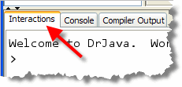
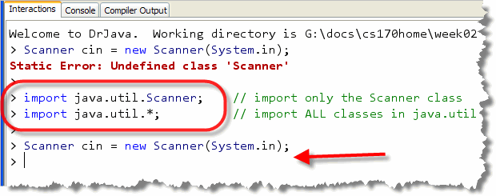
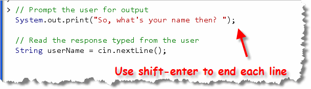
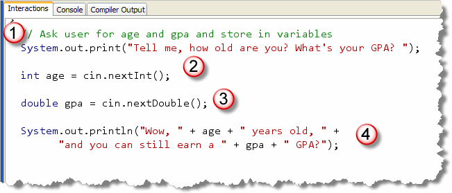
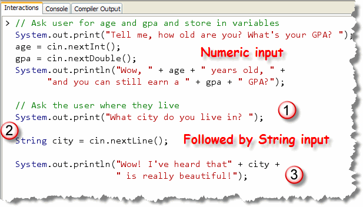
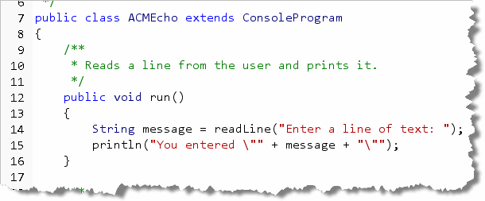
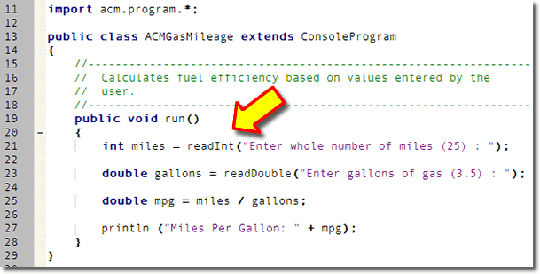
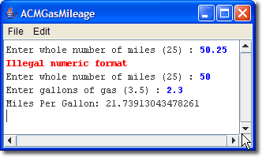
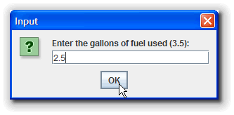

In traditional console programs
(those that make use of the
system console), the standard input stream, System.in
can be used to read from the console keyboard, just like
System.out can be used for console output.
Unfortunately, there are two difficulties with this:
- the
System.inobject only knows how to read raw bytes, not strings or numbers. - because it is possible that an input error could occur,
Java requires code using
System.in.read()to explicitly handle any exceptions that can occur, something that is a little too complicated for the first few chapters of this text.
To make up for these deficiencies in the standard input stream,
the Scanner class was added to Java 5 to make
reading data from the keyboard easier than in previous
versions of Java. The Scanner class uses of
the standard input stream, System.in, but
allows you to read strings and numbers without complications.
Interactive Scanners

To do a few experiments with the Scanner class,
I'm going to use DrJava's Interactions
Pane. This will let me try out each individual programming
step, without having to write an entire program. To get the most out
of this, follow along on your computer.
Step 1: Create a Scanner Object
Start by creating a Scanner variable.
I'll call my variable cin (which stands for
Console Input, and is the name of the console input object
in the Standard C++ library class).
Once you create the variable, you need to initialize it by
calling its constructor. The Scanner constructor
needs a parameter, which tells it "what" to read—that is,
where to get the raw bytes that it will process. Pass
in the standard input stream, System.in,
like this:
 This should look pretty familiar; it's almost exactly the
same as the examples shown at the bottom of Section 2.3—Variables
and Values, under the subhead Object Variables.
The only thing that's really changed are the type of
the object variable, and the kinds of parameters you
need to supply.
This should look pretty familiar; it's almost exactly the
same as the examples shown at the bottom of Section 2.3—Variables
and Values, under the subhead Object Variables.
The only thing that's really changed are the type of
the object variable, and the kinds of parameters you
need to supply.
Type this in and then press the Enter key to interpret and execute the statement.
 Well, don't worry. That just brings us to Step 2. Before you
take that step though, cancel the "Auto Import Class"
dialog box. Although DrJava will try to help you by adding the
necessary code, I want you to recognize the
problem, and add the needed code yourself.
Well, don't worry. That just brings us to Step 2. Before you
take that step though, cancel the "Auto Import Class"
dialog box. Although DrJava will try to help you by adding the
necessary code, I want you to recognize the
problem, and add the needed code yourself.
Step 2: Import the Scanner
Before you can actually create a Scanner
variable or object, you have to make the Scanner
class "available" to your program. The class isn't
part of the java.lang package, like the System
class is, so you have to import it into your
program, just like you did with the JOptionPane
class, the Applet class, and the ConsoleProgram
class. The Scanner class is in the java.util
package, which, as its name suggests, contains commonly used utility
classes.
To import a package into DrJava, you type an import
statement, just like you do in a regular Java program. The
only difference is, in a regular program, your import
statements must appear before the class definition. In
DrJava, you can type them in at any point in your session.
Since we need to import the Scanner class, we can
use it's fully qualified name as shown in the first line below:

This firstimport line is called a specific
import, since it only refers to a single class.
The second example shows a wildcard import
statement that makes all of the classes in the java.util
package available. Once either of
these import statements have been added, use the
"up-arrow" to re-execute the previous statement,
which creates the Scanner object without any errors.
Step 3: "Prompt" the User for Input
When you ask the user for input, you have to first tell them what to type. You don't want just a blank screen with a blinking cursor! That's not user-friendly.
Telling the user what input to type is called prompting
the user. You can use the System.out print()
and println() methods. If you use print()
then the user input on the same line as the
prompt, which is often the most natural.
For instance, if we want to ask the user to enter their name, we might write:
System.out.print("So, what's your name then? ");
Notice the space following the prompt, so that the user input doesn't start immediately after the question mark.
This is an important concept when working with console I/O: always let the user know exactly what kind of information they should enter.
Step 4: Read the Input
To read the name that the user enters,
(as a String), you use the
Scanner class next() or
nextLine() method. If you want to get
just a single word, like the first name or last name,
then use the next() method. If you use
nextLine(), then the Scanner returns
everything on the line, no matter how many words the user types.
When we receive input from the user, we'll need to
store it somewhere in memory. As you may have guessed, that means
we'll need to create a variable. Since we asked for the
user's name, that means we want a String
variable, not an int or double.
Let's try it; type this into the Interactions Pane, making sure,
as you type each line, you use Shift-Enter to
end the line, so that DrJava doesn't interpret and execute
the line immediately:

This fragments consists of two executable lines: one that asks the user to tell me their name, and one that reads the user's response. Once you've typed this in, press
Enter all by itself to execute both lines.
 When the code is executed, the program stops and waits for the user to
type in some text and then press the Enter key. (The technical
term for stopping like this is called blocking.) Once
the user presses Enter, the information supplied at the keyboard
is retrieved, and stored in the
When the code is executed, the program stops and waits for the user to
type in some text and then press the Enter key. (The technical
term for stopping like this is called blocking.) Once
the user presses Enter, the information supplied at the keyboard
is retrieved, and stored in the userName variable.
In DrJava, as you can see, the input occurs in the Interactions Pane, and DrJava puts a nice outline around where the user is supposed to type in the response. When you do this in a regular program, you won't get the outline. We'll look at an example of that shortly.
Once you've read the user's response into a variable, then you
can use that as part of your calculation or output. To print
the user's name as part of your output, you could add a
line like this:

Numeric Input
When a user types the number 123 from the keyboard, what is actually stored in memory are the three binary values
0000-0000 0011-0010
0000-0000 0011-0011
representing the three Java character values
'1', '2', and '3', stored in a Java
String object.
If the user is entering values intended to be used in a
calculation, (and not a street address, for instance), those
three char values will have to be converted from
text to the binary 32-bit integer 123, shown here:
This process—turning human-readable text, input from the keyboard
or a file, into binary numbers, (and its alter-ego, turning
binary numbers into human-readable text), is the job of
parsing or conversion. Later,
you'll learn how to use Java's wrapper classes to
parse String user input
and convert that input into integers, real numbers, and
even dates and times. For right now, though, we'll let
the Scanner class do the work for us.
Scanner Numeric Input
In the previous section, you saw how to use the
Scanner class to read a line of text from
the user, (calling its nextLine() method),
and then store the line of text in a String
variable.
The process for retrieving an int
or double is almost identical:
- Construct a
Scannervariable, using theScannerconstructor, passingSystem.inas a parameter to the constructor. - Call the appropriate numeric input method,
nextInt()ornextDouble(), and store the returned value in your variable.
Scanner Example
Let's continue with our Interactions Pane example, reading some
numeric values as well as text:

- The user is prompted to enter their age and gpa. I'm assuming the user will enter a whole number for their age, and a real number for gpa.
- Next, the
intvariableageis defined and theScanner nextInt()method is called to read an integer from the keyboard. The characters that the user types in are automatically converted fromStringto anint, and the result is placed in the variableage. - On the next line, the same process is repeated, except
a
doublevariable,gpais defined and theScanner nextDouble()method is used to read a real number from the keyboard. This time, the characters typed by the user are converted to adouble, and placed in the variablegpa. - Finally, in the last statement, (spanning two lines), the user's input is concatenated along with the program's output message.
If you run this code fragment you'll see some
output that looks a little like this:
 Notice that you can enter the two numbers on the same line, separated
by tabs or spaces. You can also press Enter after each number. Both
styles of input are processed correctly.
Notice that you can enter the two numbers on the same line, separated
by tabs or spaces. You can also press Enter after each number. Both
styles of input are processed correctly.
How Numeric Input Works
Here's a picture that shows the characters I entered when I
ran the program. Notice that the first character is a space,
followed by a six and a zero. That is followed by another
space, a three, a period, a two and the Enter key or newline:
 When
When cin.nextInt() is encountered at runtime, the Scanner
object starts reading characters, looking for a character that
could be part of an integer (a digit or a sign character). Any
whitespace characters (spaces, tabs, newlines) are simply
discarded. In my example here, the first space character would be
read and then ignored. If any other characters are encountered,
an error occurs. (You can read about the errors in the next section.)
When a character that makes up an integer is encountered,
(like the 6 in my input), then the nextInt()
method keeps reading characters, until a non-integer
character is found. In this case, it will read the 6 and the 0,
but because the space following the zero is not part of
an integer, nextInt() stops reading from
System.in. The characters read up to this point
are "marshaled" or collected in the String
"60", which is then converted
to an int value, and that is the value returned
and stored in the variable age.
When the cin.nextDouble() on the following line
is encountered, the Scanner picks up
exactly where the previous scan ended, processing the
space character following the 0 in 60:
This was the non-integer
character that caused nextInt() to stop
reading. Like nextInt(), the nextDouble()
method skips or discards leading whitespace characters, looking
for a character that matches the pattern for a valid double
When it encounters the 3, it starts assembling the characters into
a String. The decimal point is legal inside a double,
so that is added to the collection; likewise the 2 is legal as
part of a double following a decimal point. The newline character
that is encountered following that, though, is not a legal
double character and so reading stops.
The characters that are assembled so far are converted to a
double by the Scanner method, and then
returned and stored in the gpa variable.
The next input method that is called will pick up with the newline
character as its first input.

Input Errors
What happens, if the user types in an unexpected
input value, say 60.5 for age, or perhaps "sixty",
or even just adds an extra comma separating the values
like this:
 In that case, the
In that case, the Scanner object reads the
age OK, stopping on the comma. However,
when the nextDouble() method is called, the
first character of input is the comma, which does not
match the pattern for characters allowed in a double.
When this error is noticed by the Scanner object,
it prints an error message on the console, and terminates
the program.
This is called a runtime error, because it's detected when
your program runs, rather than when you compile it. (After all, the
compiler has no way of telling what the user will type in when
the program runs.)
Because of the mechanism used to generate runtime errors in Java, this kind of event is also called throwing an exception. You'll learn about Java's different kinds of exceptions later in the semester. At that time, you'll also learn how to catch an exception, and perhaps give the user a second chance to correct their input.
For right now, though, your best defense is to make your instructions (prompts) as explicit as possible. Instead of saying something like "Enter the number of miles:", you could write "Enter miles as a whole number (25) :" or something similar.
String Input Errors
You won't have an input-mismatch exception with
String variables, but you can still get some
unexpected input, especially when you mix String
and numeric input.
Here's an example. Let's add one more prompt to ask the user
where they live, following the previous input, like this:

As before:- We prompt the user for some input, in this case asking for the city that they live in.
- We the read the input, using the
ScannernextLine()method, and store the user's response in aStringvariable namedcity. - Finally, we combine the user's input with some concatenation to display an output message with something complimentary about their home-town.
Doesn't look like there's any room for error, does it. Well,
go ahead and run it, and here's the output you should see:
 Hmmmm. That seems to be a problem. What's happening? Why doesn't
it stop when I call
Hmmmm. That seems to be a problem. What's happening? Why doesn't
it stop when I call nextLine()?
Well, you remember the schematic I showed you, after the
GPA value was read?
When you do a nextLine() immediately following
numeric input, the newline character is the first character
that is read. Unfortunately, that's also the character that
"tells" nextLine() that input is finished
for this line of text.
Because of that, the variable city is assigned the
empty String. To fix it, just add an extra
readLine() immediately between numeric and
line-oriented text input like this:

If you mix text and numeric input using the Scanner
class, you'll need to remember to add extra nextLine()
statements to remove the newline characters following numeric
input. You don't need to do this between numeric
input statements.
Just because your code has no syntax errors or no runtime errors, that doesn't mean it is correct. Your program can still contain logic errors, as my code fragment does here. A logic error occurs when the actual output don't match the expected output of your program.
ACM ConsoleProgram Input
The ACM ConsoleProgram class also has methods
for reading user input from inside the ACM graphical console window.
These methods are similar to the input methods from the
Scanner class, but have slightly different names.
Here's probably the simplest possible program named ACMEcho based on
the input methods from the ConsoleProgram class:

(You can find the code in your Chapter03 folder as well.) To read input from the user, the program simply calls theConsoleProgram's readLine() method. When you
call readLine() the program stops running and waits for the
user to type in a line of text on the console.
Like the Scanner nextLine() method, the
readLine() method is actually a function; that is,
it is a method that doesn't simply do something, but a method that returns
a value to the caller. As with nextLine(), you need to
save the value returned in a variable. Here, I've created
a String variable named message to
store the value returned from the readLine() function.
String message = readLine("Enter a line of text: ");
After the input line has run, the variable message will contain
the line of text entered by the user. The second line of code in
ACMEcho uses concatenation, along with two escape characters,
to print or echo whatever the user originally typed.
println("You entered: \"" + message + "\"");
Look Ma! No Prompt Line!
There are actually two versions of the readLine()
method. The version I've used here allows you to pass a String
parameter which the program uses to "prompt" the user. When you
use the Scanner's nextLine() method,
you need to print your prompt using System.out.print().
You can
click this link to run the applet in your browser.

ACM Numeric Input
The ACM ConsoleProgram class also has a number of
numeric input methods. While the Scanner methods are
nextInt() and nextDouble(), the equivalent
ACM methods are called readInt() and readDouble().
Here's the ACM version of the a gas mileage calculator program,
named ACMGasMileage.java. You can see the use of the
readInt() method on line 21 and the
readDouble() method on line 23:

This program has a couple of advantages over the non-ACM,Scanner-based version.

- It's a little smaller.
- It runs on pre-Java 5 versions of Java
- You can run it as an applet, so you can post it on the Web so it's easy for others to use.
The biggest advantage, though, is that the ACM libraries automatically intercept input errors, and allow the user to correct their mistakes, as you can see here.
Dialog Input and Output
I want to explore one last kind of input and output: that based on
graphical dialog boxes like the picture shown below. In Chapter 1
you wrote a GUI program using the JOptionPane class,
to add a more modern input-output style to your programs.
The only problem with using JOptionPane is that
the code is considerably more complex:
- You can only get
Stringinput. - If you need to read
an
intordoubleyou need to read the input into a temporaryStringvariable first and then use a wrapper class to convert theStringto the numeric type. - You have to explicitly exit your program by using the
System.exit()method.

Fortunately, there's a much easier way to create a dialog-based program by using the ACM DialogProgram class. In fact, all we have to do to convert ACMGasMileage to the dialog version is to replace the phraseextends ConsoleProgram with the equivalent
extends DialogProgram.
Like it's console-based cousin, you can run this dialog-based version of the ACM program as an applet on the Web, although it isn't quite as seamless as the console version. You'll find the application version in your Chapter 3 folder.

Interactive Program Summary
- Interactive, or IPO programs read external input and then store and process their input.
- The
Scannerclass, in thejava.utilpackage, allows you to read both text and numbers in standard console programs. - To create a
Scannerobjects, use the constructor, passingSystem.inas a parameter; the parameter represents the source of the bytes that theScannerobject will process. - To read a line of text use the
cin.nextLine()method, wherecinis the name of theScannervariable that you created. To read a single word (surrounded by spaces), usecin.next(). - Before reading input, you should tell the user what kind of
data to enter. This is called a prompt. In console programs,
you normally use
print(), notprintln()to display your prompt, so that user input is entered on the same line. - When reading data, you must store the returned value in a variable, so that you can process it.
- To read numeric input using the
Scannerclass, usecin.nextInt()orcin.nextDouble(). - You don't need a
Scannerto read input in ACM programs. Use theConsoleProgrammethods,readLine(),readInt()orreadDouble(). You may use the receiver namedthis, but you don't have to. - When calling ACM input methods, you can supply a prompt parameter
instead of using the
print()method to display the prompt. - By changing the heading of your ACM program to
extends DialogProgram, it will automatically use dialog-box input, instead of the ACM console. Interaction with these programs is not as seamless as with console programs.